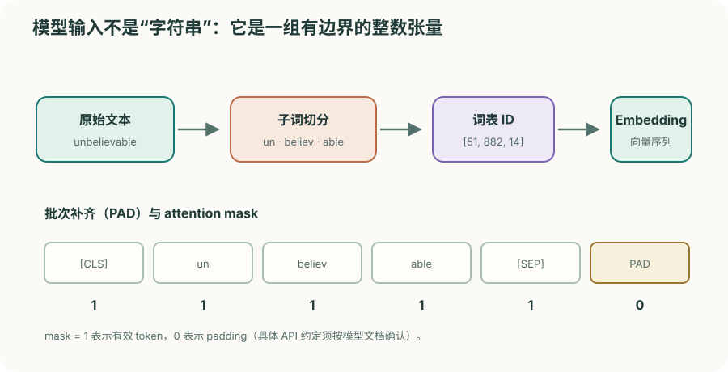
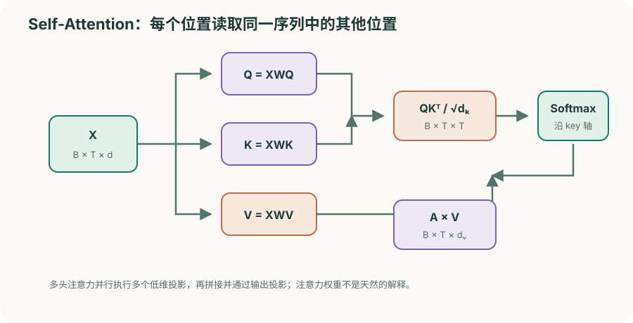
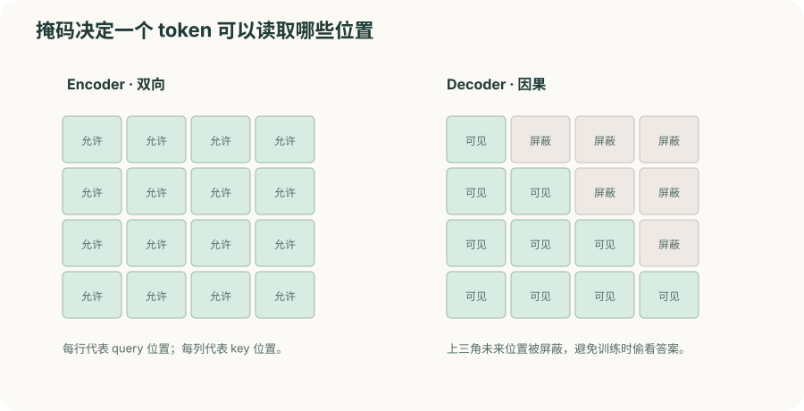
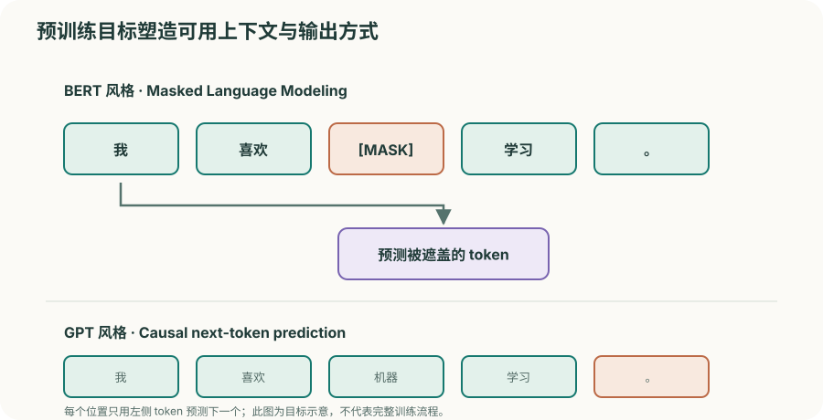

自然语言处理：从子词表示到 Transformer 与 BERT
语言模型需要把离散文本映射为 token 序列，再通过上下文建模获得表示。Word2Vec、Transformer、BERT 与 GPT 采用不同训练目标；理解 tokenizer、注意力掩码和评估边界，比记住模型名称更重要。
01 · NLP 的完整数据路径
自然语言不是模型可以直接相乘的数值矩阵。典型 NLP 流程先确定文本规范化规则，再由 tokenizer 切成 token，映射到词表 ID，加入特殊标记并组成批次，最后通过 embedding 和模型计算得到上下文表示。规范化、分词和词表都是模型输入契约的一部分。

词级词表可能遇到未登录词和形态变化；字符级序列很长；子词方法在词表规模与序列长度之间折中。BPE、WordPiece 和 Unigram 的训练目标及合并/分割规则并不相同，不能笼统称为同一种算法。特殊 token（如 CLS、SEP、BOS、EOS、PAD）也由具体模型约定。
02 · Word2Vec：静态词向量
Word2Vec 的核心思想是利用上下文共现学习稠密词向量。CBOW 用上下文预测中心词；Skip-gram 用中心词预测周围词。Skip-gram with Negative Sampling（SGNS）把一个正样本词对与若干负样本词对组成二分类式目标，避免对整个词表做完整 softmax。
这类 embedding 是静态的：一个词在不同句子里共享同一向量。词向量算术（如 king−man+woman≈queen）是特定训练语料与向量空间中的经验现象，不是语言理解的普遍定律，也不保证无偏或稳定。
import torch
from torch import nn
import torch.nn.functional as F
vocab_size, dim, negatives = 40, 12, 5
center_embedding = nn.Embedding(vocab_size, dim)
context_embedding = nn.Embedding(vocab_size, dim)
center_ids = torch.tensor([2, 7, 11, 5])
positive_ids = torch.tensor([3, 8, 10, 4])
negative_ids = torch.randint(0, vocab_size, (4, negatives))
center = center_embedding(center_ids)
positive = context_embedding(positive_ids)
negative = context_embedding(negative_ids)
pos_score = (center * positive).sum(dim=-1)
neg_score = torch.einsum("bd,bkd->bk", center, negative)
loss = -F.logsigmoid(pos_score).mean() - F.logsigmoid(-neg_score).mean()
loss.backward()
assert torch.isfinite(loss)
print("SGNS toy loss:", round(loss.item(), 4))03 · 自注意力：上下文如何进入表示
自注意力把每个 token 的输入表示投影为 Query、Key 和 Value。Query 与各 Key 的点积形成相关性分数，按 key 位置 softmax，再对 Value 加权求和。缩放因子 √dₖ 用于控制点积分布的尺度；多头注意力让不同投影子空间并行计算。

位置顺序不会从普通点积中自动出现，因此 Transformer 还要注入位置编码或位置偏置。标准全注意力在长度 T 上构造 T×T 交互矩阵，计算和显存随序列长度呈二次增长；长上下文系统常需稀疏、分块或其他高效注意力方案。
import torch
def scaled_dot_product_attention(q, k, v, key_valid=None):
depth = q.size(-1)
scores = q @ k.transpose(-2, -1) / (depth ** 0.5)
if key_valid is not None:
scores = scores.masked_fill(~key_valid[:, None, None, :],
torch.finfo(scores.dtype).min)
weights = scores.softmax(dim=-1)
return weights @ v, weights
q = torch.randn(2, 3, 5, 8) # [B, heads, query_len, depth]
k = torch.randn(2, 3, 6, 8)
v = torch.randn(2, 3, 6, 8)
valid = torch.tensor([[1, 1, 1, 1, 0, 0], [1, 1, 1, 1, 1, 1]], dtype=torch.bool)
out, weights = scaled_dot_product_attention(q, k, v, valid)
assert tuple(out.shape) == (2, 3, 5, 8)
assert torch.all(weights[0, :, :, 4:] == 0)
print("attention output:", tuple(out.shape))04 · Encoder、Decoder 与注意力掩码
Transformer Encoder 的自注意力通常允许每个输入位置读取同一序列中的左右上下文；自回归 Decoder 则使用因果掩码，位置 t 只能读取不晚于 t 的 token。若没有因果掩码，训练时模型可能直接看到要预测的未来 token，目标就失去意义。
掩码的布尔语义并不统一。以当前 PyTorch API 为例：torch.nn.functional.scaled_dot_product_attention 的布尔 attn_mask=True 表示允许参与注意力；nn.MultiheadAttention 的布尔 attn_mask=True 表示禁止注意力，其 key_padding_mask=True 也表示忽略该 key。把一种 API 的 mask 原样传给另一种 API，可能静默反转可见位置。
下面的最小断言只核对掩码极性，不执行模型前向；在从 MHA 迁移到 SDPA 时，应显式取反并重新验证广播形状。
import torch
valid_keys = torch.tensor([[True, True, False]])
sdpa_attn_mask = valid_keys[:, None, None, :] # True = participate
mha_key_padding_mask = ~valid_keys # True = ignore
assert sdpa_attn_mask[0, 0, 0].tolist() == [True, True, False]
assert mha_key_padding_mask[0].tolist() == [False, False, True]
print("SDPA and MHA padding-mask polarities checked")参考：SDPA mask semantics 与 MultiheadAttention mask semantics。


BERT 原论文使用双向 Transformer Encoder，并采用 Masked Language Modeling（MLM）和 Next Sentence Prediction（NSP）预训练目标。后续 RoBERTa 工作去掉 NSP，并改变训练数据、批次和训练时长等设置；因此不能把“BERT 必须依赖 NSP”当作现代编码器预训练的通用规则。
05 · BERT 与 GPT：目标决定上下文约束
BERT 是 Encoder-only 表示模型：MLM 让被遮盖位置利用左右上下文预测原 token，适合分类、序列标注、检索表示等任务。GPT 类 Decoder-only 模型使用因果语言建模，预测下一个 token，适合逐步生成。两者是典型范式，不代表“BERT 只能理解、GPT 只能生成”：模型能力还受数据、规模、指令微调、工具使用和评估方式影响。
| 维度 | Encoder-only（BERT 类） | Decoder-only（GPT 类） |
|---|---|---|
| 注意力 | 输入序列双向可见 | 因果掩码，只看左侧上下文 |
| 典型预训练 | MLM（原始 BERT 另有 NSP） | Next-token prediction |
| 常见任务形态 | 给定文本的表示与判别 | 条件续写与生成 |
| 推理特点 | 完整输入可并行编码 | 自回归生成按 token 迭代 |
微调时 tokenizer 与模型权重必须配套；输入要传入正确的 attention mask；标签编号、类别顺序、最大长度和截断方向也必须与训练契约一致。训练/验证/测试应按文档或实体分组，避免同一来源文本的近重复片段跨集合。
06 · 从 tokenizer 到训练批次的可执行契约
下面用一个极简词表演示 token ID、padding 与 mask 的关系。它不是 BPE 或 WordPiece 的实现；真实 tokenizer 会处理子词合并、特殊 token、Unicode 规范化和模型特定规则。
import torch
vocab = {"[PAD]": 0, "[CLS]": 1, "[SEP]": 2, "hello": 3, "world": 4, "ml": 5}
sentences = [["[CLS]", "hello", "world", "[SEP]"],
["[CLS]", "ml", "[SEP]"]]
max_len = max(map(len, sentences))
input_ids = torch.tensor([
[vocab[t] for t in row] + [vocab["[PAD]"]] * (max_len - len(row))
for row in sentences
])
attention_mask = input_ids.ne(vocab["[PAD]"]).long()
assert tuple(input_ids.shape) == (2, 4)
assert attention_mask.tolist() == [[1, 1, 1, 1], [1, 1, 1, 0]]
print("input_ids:", input_ids.tolist())
print("attention_mask:", attention_mask.tolist())注意：有些模型把 mask 的 1/0 语义或参数名称定义为“可见/屏蔽”相反方向；使用 API 时应查看模型文档，不要把一个框架的 mask 约定复制到另一个框架。
07 · NLP 评估与常见失败模式
- Tokenizer mismatch：用 A 模型 tokenizer 产生 ID，却送入 B 模型 embedding，数值形状正确也可能语义完全错误。
- Padding leakage：注意力屏蔽了 PAD，但损失仍把 PAD 位置计入；或反过来，损失忽略 PAD 却让模型注意 PAD。
- Truncation bias：只保留开头可能删掉答案，盲目保留结尾也可能丢失任务指令。
- 数据泄漏：同一用户、文档、模板或时间片段的近重复文本进入不同数据集。
- 指标错配：Accuracy、macro-F1、micro-F1、perplexity 和生成评测回答不同问题；不能把单一指标当作全面语言质量。
- 预训练偏差：语言模型可能复现训练语料中的偏见、隐私泄露和不可靠事实。
现代 NLP 的核心工作流是：固定数据与 tokenizer 契约，明确任务目标和掩码，建立简单基线，再用分层评估和错误分析验证模型真正学到了什么。
来源、实现版本与适用边界
论文用于核对算法定义与历史主张；官方文档用于核对 API 行为。图中的张量和数值若未明确引用论文实验，均为构造的教学示例，不代表 benchmark 或生产效果。
- Mikolov et al. (2013), Efficient Estimation of Word Representations in Vector Space
- Vaswani et al. (2017), Attention Is All You Need
- Devlin et al. (2018), BERT: Pre-training of Deep Bidirectional Transformers for Language Understanding
- Liu et al. (2019), RoBERTa: A Robustly Optimized BERT Pretraining Approach
- Hugging Face Transformers: Tokenizers 与 padding/truncation
- PyTorch scaled_dot_product_attention API